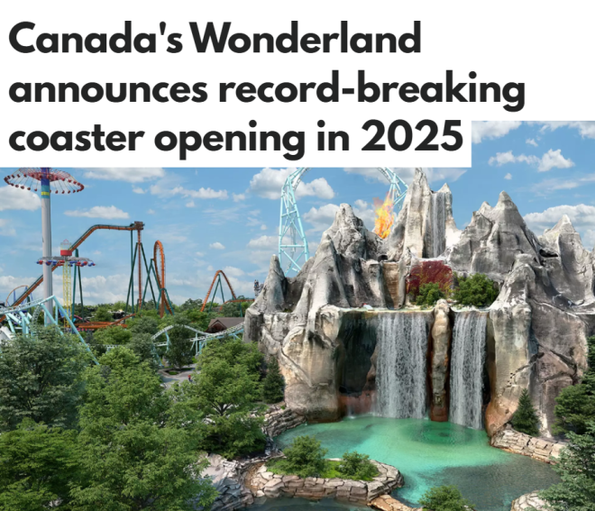
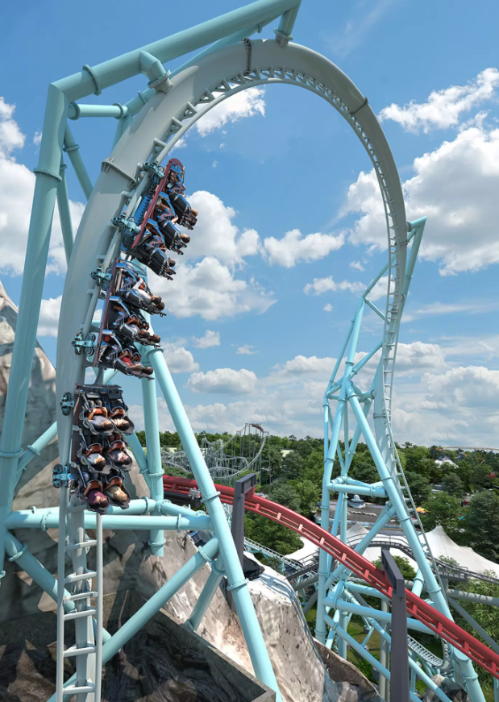

就问你期待不期待！
Canada’s Wonderland今天（周四）宣布将在2025年开放一个疯狂的全新经典！

图源：BlogTO| Canada’s Wonderland
这家主题公园透露，备受关注的秘密过山车自3月以来就一直在公园内建造，并且将成为加拿大最长、最高、速度最快的过山车，这个“破纪录”的过山车名为AlpenFury。
新过山车将沿着一条1000米长的轨道，将乘客们从园区标志性的奇幻山上推出，最高时速可达115km/h，并有令人眼花缭乱的9次翻转，这比其他任何过山车都要多。

图源：Canada’s Wonderland
这个由游乐设施制造商Premier Rides设计的AlpenFury将成为园区里的第19个过山车，同时也是第四个跟标志性假山直接关联的游乐设施。
“AlpenFury是一个世界级的游乐设施，我们很高兴它能为游客带来独特的刺激体验，”Wonderland总经理Phil Liggett说道。
“从奇幻山上冲下来，然后连续穿越九个翻转，这种体验将令游客难以忘怀。”Alpenfest还将设有一个雪橇屋，作为这个新游乐设施的入口。
要知道，这个游乐设施将成为公园新主题区的核心，该“村庄”主题区域将于明年首次亮相，被描述为举办“庆祝冰火神秘结合的节日”，为游乐设施又增添了几分神秘和刺激感。
Wonderland尚未宣布这个新过山车的正式开放日期，但大家可以先期待一下了！